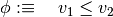
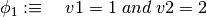
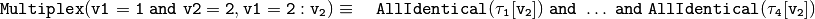
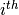
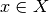

5. Appendix B: Parameter Constraint Language¶
In this section we introduce a high-level parameter constraint language. In Section 1: Initial Parametrizations we use this language to define the initial parametrizations. In Section 2: Classifying the same language is used to mark parametrizations that ought to be classified, but also to speed up the classification by learning from the computations performed for a particular parametrization. The language is based on an original approach to referencing parameters, and 6 types of predicates that use this approach. We will discuss the semantics and possible applications in modelling of each of the 6 predicate types we have implemented.
Low-level constraints
We call constraints low-level, if they are logical propositions over parameter inequalities. A parametrization
satisfies a low-level constraint
, if the
Running example: An example of a low-level constraint
P-valuation
A parametrization
The difficulty here is that biological assumptions are in general not precise enough to be formulated as short low-level constraints. Rather, the biological assumptions are characterized by ambiguity, which results in long low-level constraints, that are tedious to assemble by hand.
A good example of this vagueness are assumptions about the effect that a regulator has on its target, i.e., the edge label of an interaction. We may know that a regulator inhibits the activity of its target, but we do not know the exact context in which the inhibition is observable. We can only safely assume that there is a context such that increasing the regulator’s activity decreases the target’s activity.
Example: Consider a regulatory graph, where a component
has exactly 3 regulators and . Assume also that each interaction targeting

For this reason we have devised predicates, like , that are equivalent to longer low-level constraints, but make the modelling process more convenient, because we do not need to think about which parameters are concerned nor how the respective inequalities are connected.
The predicates work by a feature called parameter reference.
It is a concise form of refering to a subset of the kinetic parameters of a regulatory graph .
All that is required to define the set is a state formula  and a component
and a component  :
:
Parameter reference
Recall from Appendix A: Regulatory contexts that
denotes the state formula associated to the regulatory context
of component
In our constraint language, the syntax of a parameter reference is:
parameter_reference ::= state_formula '[' component ']'Running example: Consider the state formula . The referenced states, in concise tuple notation, are:
With
The reaseon why is that , which intersects . The reason why is that , which does not intersect .
![K_1[\phi]=\{K_1^{00},K_1^{01},K_1^{11}\},\;\;K_2[\phi]=\{K_2^{00},K_2^{10},K_2^{01},K_2^{11},K_2^{21}\}](_images/math/a155a00ffa98e00044ff49cc2938ec07438752eb.png)
Now we are set to discuss the following constraints:
5.1. Predicate Type 1: Inequalities¶
Inequality constraints restrict the values of a set of parameters to satisfy all - or some - inequalities. The left-hand side of each inequality is always from the first set of parameters. For the right-hand side, we distinguish two types of inequalities: Either the right-hand side of the inequality is an integer value, in which case we have an inequality_abs constraint, or a second set of parameters is passed to the right hand side, in which we have a inequality_rel constraint.
Syntax
inequality ::= inequality_abs | inequality_rel inequality_abs ::= quantifier '(' parameter_reference operator activity ')' inequality_rel ::= quantifier '(' parameter_reference operator parameter_reference ')' operator ::= '<'|'<='|'='|'>='|'>'|'!='Semantics
Inequality_Abs: Let be the referenced parameters, the operator and the activity of an inequality_abs constraint. Depending on the quantifier, the low-level constraint becomes:
Inequality_Rel: Let be the first referenced parameters, the operator and the second referenced parameters of an inequality_rel constraint. Depending on the quantifier, the low-level constraint becomes:
Running example: Let us consider the state formula . The parameter reference for
![\begin{array}{ll}
{\tt Some(v1<=v2[v1] = 0)}\equiv\quad& K_1^{00}=0\;or\;K_1^{01}=0\;or\;K_1^{11}\\
{\tt All(v1<=v2[v1] = 0)}\equiv\quad& K_1^{00}=0\;and\;K_1^{01}=0\;and\;K_1^{11}\\
{\tt Some(v1<=v2[v1] < v1<=v2[v2])}\equiv\quad& K_1^{00}<K_2^{00}\;or\;K_1^{01}<K_2^{00}\;or\;K_1^{11}<K_2^{00}\;or\;\\
&K_1^{00}<K_2^{10}\;or\;K_1^{01}<K_2^{10}\;or\;K_1^{11}<K_2^{10}\;or\;\\
&K_1^{00}<K_2^{01}\;or\;K_1^{01}<K_2^{01}\;or\;K_1^{11}<K_2^{01}\;or\;\\
&K_1^{00}<K_2^{11}\;or\;K_1^{01}<K_2^{11}\;or\;K_1^{11}<K_2^{11}\;or\;\\
&K_1^{00}<K_2^{21}\;or\;K_1^{01}<K_2^{21}\;or\;K_1^{11}<K_2^{21}\\
{\tt All(v1<=v2[v1] < v1<=v2[v2])}\equiv\quad& K_1^{00}<K_2^{00}\;and\;K_1^{01}<K_2^{00}\;and\;K_1^{11}<K_2^{00}\;and\;\\
&K_1^{00}<K_2^{10}\;and\;K_1^{01}<K_2^{10}\;and\;K_1^{11}<K_2^{10}\;and\;\\
&K_1^{00}<K_2^{01}\;and\;K_1^{01}<K_2^{01}\;and\;K_1^{11}<K_2^{01}\;and\;\\
&K_1^{00}<K_2^{11}\;and\;K_1^{01}<K_2^{11}\;and\;K_1^{11}<K_2^{11}\;and\;\\
&K_1^{00}<K_2^{21}\;and\;K_1^{01}<K_2^{21}\;and\;K_1^{11}<K_2^{21}\\
\end{array}](_images/math/9c912f9485835e076a9429417cb736725cf2ad37.png)
5.2. Predicate Type 2: Identities¶
Identity constraints enforce some - or all - values of a set of parameters to be equal.
Syntax
identity ::= quantifier 'Identical(' parameter_reference ')' quantifier ::= ('All' | 'Some')Semantics
Let
be the referenced parameters. Depending on the quantifier, the equivalent low-level constraints are:
Running example: Let us consider the state formula . The parameter reference for
5.3. Predicate Type 3: Multiplexes¶
A multiplex constraint imposes a partition on the parameters of a specified component. Parameters in the same block of the partition belong together in the sense that they must all be equal. The partition is implicitly defined by specifying a list of state formulas, called multiplexes in this context. The procedure that achieves the partition of the parameters is then: For each state formula of a context of the specified component, compute the subset of the given state formulas that intersect . The blocks of the partition are then defined to consist of those Kinetic parameters that intersect the same subset of state formulas. For a publication on multiplexes see Section “Thomas’ Modelling with Multiplexes” in [Khalis09].
Syntax
multiplex ::= 'Multiplex(' state_formula {',' state_formula} ':' component ')'Semantics
Let be the given state formulas and
Running example: Let us consider the multiplexes  and . With the following definitions of the state formulas :
the equivalent of the multiplex constraint in terms of identity constraints is:

To compute the equivalent low-level constraint, we need the partition of the kinetic parameters of . To compute the partition, we need to list for every parameter formula those multiplexes that intersect its states:
In this case we have a partition into 3 blocks: Those parameters that do no intersect either state formula, i.e., , those that only intersect , i.e., , and those that only intersect , i.e., . There are no parameters that intersect both. The equivalent low-level constraints is therefore:

5.4. Predicate Type 4: Edge Labels¶
Edge labels constrain the effect, that a regulator has on its target. With circuit functionality, they were one of the first constraints to be considered by Thomas and Thieffry and are essential to the Thomas conjectures about feedback loops and attractors in the transition graph. Originally, the labels enforced a monotonicity in the target values (see for example Def. 4 and Sec. 5 in [Bernot04]). Later, observability was added to the edge label constraints (see Sec. 4.2 in [Richard05]).
Syntax
edge_label ::= label '(' name ',' name , threshold [',' state_formula] ')' label ::= 'Observable' | (('Activating' | 'Inhibiting') ['Only'])Semantics
Let
be the parameters of , referenced by . For each context
we denote by
the unique context obtained from
The low-level equivalent of the edge labels Activating and Inhibiting are then defined by:
The other edge labels are convenient shortcuts for logical combinations of Activating and Inhibiting:
The optional state formula restricts the referenced parameters. With it we can control where in state space we want to see the interaction effect.
Running example: Let us consider a couple of examples.
First an example without a state formula: . The referenced parameters are . The equivalent low-level constraint is therefore:
Now an example with a state formula: . The referenced parameters are . The equivalent low-level constraint is therefore:
Finally an example of a convenience edge label:
5.5. Predicate Type 5: Subgraphs¶
These constraints enforce the existence of a subgraph in the asynchronous state transition graph. We have implemented a general subgraph and a path predicate.
Syntax
subgraph ::= 'ContainsSubgraph(' transitions {',' transitions})' transitions ::= state ': [' states '] path ::= 'ContainsPath(' states ')' states ::= state {',' state} state ::= activity {activity} activity ::= 0 | 1 | ...Semantics
Subgraph: We use the successor-based description of directed graphs as an argument for the subgraph constraint. A transition therefore consists of a tail state, followed by a semicolon and a list of successor states. We denote a state by a tuple of activities, given in concise notation without brackets or commata, where the  activity refers to component
An example of the syntax of a successor-based description of the 3 unitary and asynchronous transitions is:
We denote the state formula referencing a single state  by
For every transition of an asynchronous state transition graph
, there is a unique index , such that . For each tail state and each of its successors there is a unique index , such that . The single parameter that causes the transition is therefore . If we enforce the low-level constraint:
Otherwise, if we enforce the low-level constraint:
Path: A path constraint is just a special case of a subgraph constraint with simplified syntax, i.e., by just passing a comma seperated list of the path states in sequence to the predicate.
Running example: If we want to make sure that the transitions are contained in the transition graph of a model, we enforce the constraint . The equivalent low-level constraint is:
The low-level equivalent of a path constraint, for the existence of the path in the transition graph, is:
5.6. Predicate Type 6: Comparisons¶
The comparison predicate is different to the other constraints, defined above, in that it requires the specification of a particular parametrization. It is therefore not applicable to Section 1: Initial Parametrizations. Instead, it is included especially for the custom classifiers of Section 2: Classifying. During the classification loop, a particular parametrization is retrieved from the model database. A compare constraint is similar to a inequality_abs constraint. Instead of specifying a constant number for the right-hand side of the inequalities, the corresponding target values of the given parametrization are substituted.
Syntax
compare ::= quantifier 'Compare(' parameter_reference ':' operator ')'Semantics
Let
Running example: Suppose the specified parametrization is:
Here are two examples of a compare constraint: